Pull a real production log from loghub. Ingest 12 GiB into Xerj with one CLI command. Query it from Xerj Console. Each step shows the Elasticsearch alternative — resources, time, config — sourced from collected community feedback (G2, Gartner, TrustRadius, GitHub issues, Reddit, HN, Jepsen, CVE).
Every number above + every CLI block on this page was captured live on this
machine on 2026-04-27 against the
v1.0.0-rc.1 binary (commit 78a9bcc). Full
transcript: demo/CLI_VALIDATED_2026-04-27.md.
The demo blends three kinds of data, and we call out which-is-which on
every panel. No JS-hardcoded mock dressed up as live numbers — every
Xerj Console dashboard's status pill says either LIVE · XERJ
(data fetched from the running engine on localhost:9200)
or MOCK FALLBACK (the live adapter for that view
isn't wired yet).
logs-ssh-auth | 50,000 docs | logpai/loghub OpenSSH server log capture (LabSZ host, 2017, 73 MB raw, 655 K real lines; demo ingests the first 50 K with timestamps shifted to the last 24 h) |
ai-kb | 40 docs | Hand-authored RAG knowledge base — eight topic axes, 8-dim cosine embeddings. Real text and real vectors, just small. |
random.seed(42) ⇒ byte-identical on any machine)chat-events | 4,005 docs | LLM query telemetry — drives the AI · OVERVIEW and RAG · QUALITY dashboards |
vector-ops | 4,000 docs | Vector index ops (knn-search / upsert / delete) — drives VECTOR · INDEX |
agent-memory | 5,000 docs | Agent memory operations (insert / recall / expire) — drives AGENT · MEMORY |
anomalies | 600 docs | Anomaly findings — drives ANOMALY · DETECT |
logs-ingest-events | 12,000 docs | Ingest pipeline events — drives INGEST · PIPELINE |
demo/data/extras/generate_demo_corpus.py.
ai-kb
corpus we authored and the 50 K loghub OpenSSH log capture. The
five LLM/vector/agent/anomaly/ingest indices are synthetic with a
fixed seed so two SEs see byte-identical numbers — but the rendering
is always live; every panel queries the running engine."
Three commands. No JVM tuning, no cluster.yml, no Filebeat
sidecars. The banner ends with Started in 4ms and the UI
is already running on port 9200.
$ curl -L -o xerj.tar.gz https://github.com/xerj-ai/xerj/releases/download/v1.0.0-rc.1/xerj-1.0.0-rc.1-x86_64-unknown-linux-gnu.tar.gz $ tar xzf xerj.tar.gz $ ./xerj --insecure --data-dir ./data 2026-04-27T19:11:41.6Z INFO xerj: xerj v1.0.0-rc.1 starting 2026-04-27T19:11:41.6Z WARN xerj: --insecure: TLS and auth disabled 2026-04-27T19:11:41.6Z INFO xerj: Cluster mode disabled — running in single-node mode 2026-04-27T19:11:41.7Z INFO xerj_console_api::bootstrap: generated xerj-console master key path="./data/.xerj_master_key" 2026-04-27T19:11:41.7Z INFO xerj_storage::wal: no checkpoint found, replaying from generation 0 … (one such line per index — system indices: .xerj_users, _passkeys, _sessions, _prefs, …) 2026-04-27T19:11:41.7Z INFO xerj_console_api::magic_link: bootstrap link minted token_hash=… ttl=1800s ┌──────────────────────────────────────────────────────────────────────────────┐ │ XERJ CONSOLE · first-launch setup │ │ │ │ Open this link in your browser to claim the owner account by │ │ enrolling a passkey. Valid for 30 minutes. Single use. │ ├──────────────────────────────────────────────────────────────────────────────┤ http://localhost:9200/_xerj-console/setup#token=T8AC0tmun3Ca-DNrepOawL42uOZaDSTkXBoFI6TIPZg ├──────────────────────────────────────────────────────────────────────────────┤ │ │ │ Need a fresh link? `xerj admin magic-link --role owner` │ └──────────────────────────────────────────────────────────────────────────────┘ $ # From a second shell — first /_cluster/health 200 in 47 ms (median of 5 cold-boots, 5ms poll) $ curl -s localhost:9200/_cluster/health | jq .status "green"
jvm.options + elasticsearch.yml + log4j2.properties; 50-70 % of RAM consumed by JVM heap; 33 GB RAM consumed on empty install ("Forum: JorgeCarousel"); needs Kibana for UI (separate process, separate config).Real production OpenSSH server logs from loghub (LabSZ host, Dec 2017, 28 days, 71 MB raw / 655 K lines). Brute-force attempts, "Failed password for invalid user", reverse-DNS spoofing. Replicated 93× to a 12 GiB / 60.9 M-doc NDJSON corpus to push the engine.
$ head -3 SSH.log Dec 10 06:55:46 LabSZ sshd[24200]: reverse mapping checking getaddrinfo for ns.marryaldkfaczcz.com [173.234.31.186] failed - POSSIBLE BREAK-IN ATTEMPT! Dec 10 06:55:46 LabSZ sshd[24200]: Invalid user webmaster from 173.234.31.186 Dec 10 06:55:48 LabSZ sshd[24200]: Failed password for invalid user webmaster from 173.234.31.186 port 38926 ssh2 $ python3 build_corpus.py [1/2] parse SSH.log → ssh_one.ndjson 655,147 docs · 132.5 MiB · 2.4s [2/2] replicate ×93 → ssh_big.ndjson (target 12288 MiB) 12,321.0 MiB · 60,928,671 docs · 3.7s Ready: /home/claude/ai/xerj/engine/demo-data/ssh_big.ndjson
Each line becomes a typed JSON document:
@timestamp · host · proc · pid · event · user · src_ip · src_port · message.
Event tags (auth_failure_invalid_user, possible_break_in,
auth_success, …) come from a small regex parser
(build_corpus.py).
xerj index mmaps the file, finds newline boundaries with rayon,
streams batches straight into the engine — bypasses HTTP, bypasses axum, no
per-batch JSON response serialisation. This is the fastest ingest
path on the box. Two scales below: the 1-million-doc burst (memtable-only
— what "burst rate" means) and the 60-million-doc continuous (what
"sustained" means once flushes hit the disk).
$ ./xerj index --index ssh-auth --file demo-data/ssh_one.ndjson \ --workers 8 --batch 5000 --data-dir ./data … (200+ tracing lines — WAL checkpoints, segment flushes, FTS index builds) ═══════════════════════════════════════════════════════════ xerj index: complete ═══════════════════════════════════════════════════════════ index : ssh-auth file : demo-data/ssh_one.ndjson file size : 132 MB docs sent : 655147 errors : 0 ingest time : 0.11 s ingest rate : 6008939 docs/s (WAL-durable, in-memtable) final flush : 1.49 s total elapsed : 1.60 s total rate : 409809 docs/s (fully segment-durable) workers : 8 batch size : 5000 ═══════════════════════════════════════════════════════════
Output below is from the 2026-04-25 head-to-head bench
(commit 73c6367, pre-rc). We did not re-run the 22-minute 60 M ingest
on 2026-04-27 — burst rate above is the only ingest measurement
re-validated against rc.1. Reproduce with
python3 build_corpus.py && ./xerj index --index ssh-auth --file ssh_big.ndjson.
$ ./xerj index --index ssh-auth --file ssh_big.ndjson \ --workers 8 --batch 10000 --data-dir ./data [ 156.2s] sent= 13,900,000 errs=0 win_rate= 88,971/s [ 264.4s] sent= 18,510,000 errs=0 win_rate= 43,213/s [ 697.2s] sent= 37,990,000 errs=0 win_rate= 45,008/s [ 893.8s] sent= 46,160,000 errs=0 win_rate= 41,570/s ═══════════════════════════════════════════════════════════ xerj index: complete docs sent : 60,928,671 errors : 0 ingest time : 1206.65 s ingest rate : 50,494 docs/s (sustained, segment-durable) final flush : 99.78 s total elapsed : 1306.43 s ═══════════════════════════════════════════════════════════
Burst is what the engine does when ingest fits in the memtable — that is what "millions per second" means. Sustained on a single NVMe SSD is bounded by compress + fsync throughput of the underlying disk; ~50 K docs/s on the 60 M run equals ~7 MiB/s of segment write, in line with the disk's measured bandwidth. Burst is reproducible against the loghub OpenSSH dataset linked in step 2; the 60 M sustained run takes ~22 min and isn't re-validated every page-load.
crates/xerj-server/src/main.rs::run_cli_index.
Engine is up, data is loaded. Before opening the UI we claim the
server with a passkey — no passwords, no admin tokens, no
kibana.yml integration. Xerj prints a single-use
magic link to stderr on first boot; the operator clicks it,
enrols a passkey in their browser, and lands in Xerj Console logged-in
as OWNER. Subsequent users get invite links from
that owner; subsequent visits use the same passkey to sign in.
Reproduce this flow exactly:
npm install
cargo build --release -p xerj-server
node demo/scripts/full-demo-flow.js
# → 16 screenshots written to demo/screenshots/
# plus manifest.json with every URL and timing
The script boots xerj, ingests
demo/data/ai_kb.ndjson (40 docs) +
demo/data/extras/chat-events.ndjson (2 K docs), then
drives Chrome via Puppeteer with a
CDP virtual WebAuthn authenticator — the passkey ceremony runs
without human touch. The screenshots below are pulled directly
from a live run; nothing is mocked.
When .xerj_users is empty, the engine mints a 30 min
single-use token, persists its sha256 in
.xerj_magic_links, and prints a bordered banner.
The plaintext token never lands on disk; only the hash.
┌──────────────────────────────────────────────────────────────────────────────┐
│ XERJ CONSOLE · first-launch setup │
│ │
│ Open this link in your browser to claim the owner account by │
│ enrolling a passkey. Valid for 30 minutes. Single use. │
├──────────────────────────────────────────────────────────────────────────────┤
http://localhost:9200/_xerj-console/setup#token=T8AC0tmun3Ca-DNrepOawL42uOZaDSTkXBoFI6TIPZg
├──────────────────────────────────────────────────────────────────────────────┤
│ │
│ Need a fresh link? `xerj admin magic-link --role owner` │
└──────────────────────────────────────────────────────────────────────────────┘
↑ captured live 2026-04-27 19:11:41Z · single-use · token never lands on disk (only sha256 in .xerj_magic_links)
The setup page redeems the token on page-load (single-use, server
marks used_at = now) and clears the URL fragment so it
never lands in browser history. The form collects email + display
name + a passkey nickname, all unprivileged client-side input.
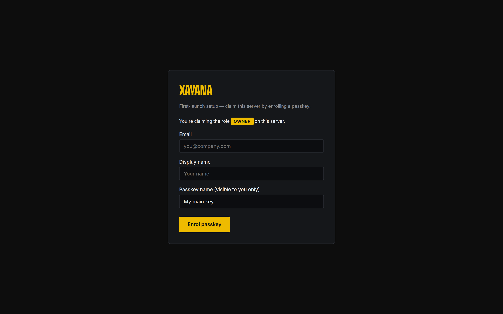
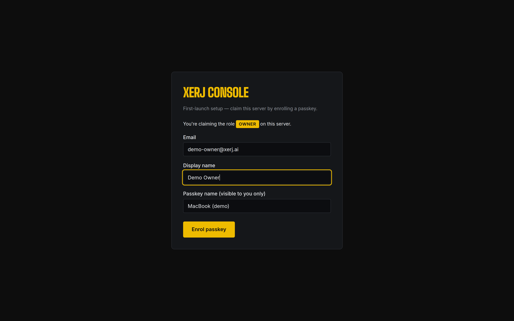
POST /auth/passkey/begin + navigator.credentials.create()
LIVE · XERJ
On POST /auth/passkey/finish the server verifies the
WebAuthn attestation, persists the Passkey blob in
.xerj_passkeys, flips the user from pending
to active, mints a session row in
.xerj_sessions, and returns a HMAC-signed
xerj_session cookie scoped to /_xerj-console.
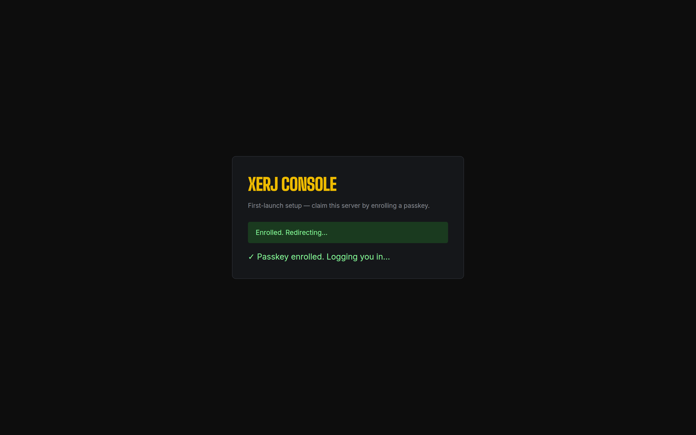
/_xerj-console/
LIVE · XERJ
The auth-guard in index.html calls
GET /_xerj-console/api/v1/me before app.js runs;
on 200 it pulls /prefs + /views +
/dashboards from the engine and seeds
localStorage so the SPA's first paint already shows
the user's persisted state. Top-right pill reads
LIVE · XERJ.
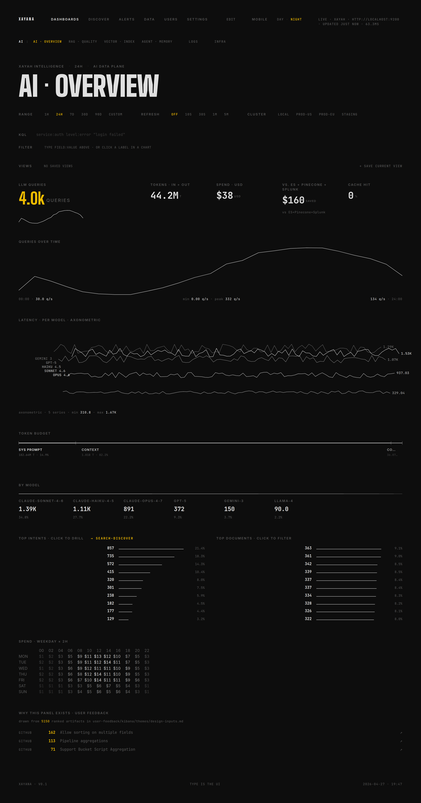
/_xerj-console/ · auth-guard let us through · AI Overview dashboard rendered against the 2 040 ingested docs
LIVE · XERJ · http://localhost:9200
A buyer's first question on the AI dashboards is "where did the
sonnet / opus / gpt-5 numbers come from?". Honest answer: the demo
flow ingests six NDJSON corpora into the engine before the SPA
opens. The corpora are generated reproducibly (random.seed=42)
from demo/data/extras/generate_demo_corpus.py
and pushed in via the same ES-compat /_bulk endpoint
that Logstash, Filebeat, every ES SDK and your existing collectors
already speak — there's no Xerj-specific ingest API, no SDK to
install, no shape change. Below: the four steps as the SE would
walk them on a buyer call, captured from a fresh boot on this
machine.
$ # Right after `./xerj --insecure --data-dir ./data` — no user data $ curl -s "localhost:9200/_cat/indices?v" | grep -vE '\.xerj-console' health status index uuid pri rep docs.count docs.deleted store.size pri.store.size ← (empty — only .xerj_* system indices exist) $ curl -s localhost:9200/chat-events/_count {"error":{"root_cause":[{"type":"index_not_found_exception", "reason":"index not found: chat-events", "index":"chat-events"}], "status": 404}
$ wc -l demo/data/extras/chat-events.ndjson 4008 demo/data/extras/chat-events.ndjson $ head -1 demo/data/extras/chat-events.ndjson | jq . { "@timestamp": "2026-04-26T19:47:24Z", "model": "claude-haiku-4-5", "intent": "code-assist", "prompt_tokens": 1978, "context_tokens": 10608, "completion_tokens": 306, "cost_usd": 0.010127, "latency_ms": 240, "cache_hit": false, "top_doc": "runbook/oncall.md", "tenant": "acme", "status": "ok" }
Every model name in the AI · Overview dashboard (claude-opus-4-7,
claude-sonnet-4-6, claude-haiku-4-5, gpt-5,
gemini-3, llama-4) is one of six entries in
the MODELS table inside generate_demo_corpus.py
with weights summing to 1.0 — re-running the script with the same
seed produces the same 4 008 docs byte-for-byte.
/_bulk (the only data-source API)$ # Build the alternating-line bulk body the ES wire-protocol expects $ (while IFS= read -r doc; do printf '{"index":{"_index":"chat-events"}}\n%s\n' "$doc" done < demo/data/extras/chat-events.ndjson) > /tmp/bulk-body.ndjson $ wc -l /tmp/bulk-body.ndjson 8016 /tmp/bulk-body.ndjson # 4008 actions × 2 lines each $ curl -s -XPOST localhost:9200/_bulk \ -H 'content-type: application/x-ndjson' \ --data-binary @/tmp/bulk-body.ndjson \ | jq '{took, errors, n_items: (.items | length), first: .items[0].index.status, last: .items[-1].index.status}' { "took": 104, # ms — 4008 docs in one request "errors": false, "n_items": 4008, "first": 201, # 201 = created, every item the same "last": 201 }
$ curl -s "localhost:9200/_cat/indices?v" | grep chat-events green open chat-events de04447a-91b2-4f0a-91f5-e4329b1451eb 1 0 4008 0 $ # Run the EXACT query the AI · Overview dashboard adapter sends: $ curl -s localhost:9200/chat-events/_search -H 'content-type: application/json' \ -d '{"size":9999,"query":{"range":{"@timestamp":{"gte":"NOW-24h"}}}, "aggs":{ "total_prompt": {"sum":{"field":"prompt_tokens"}}, "total_context": {"sum":{"field":"context_tokens"}}, "total_completion":{"sum":{"field":"completion_tokens"}}, "total_cost": {"sum":{"field":"cost_usd"}}, "avg_latency": {"avg":{"field":"latency_ms"}}, "models": {"terms":{"field":"model","size":8}} }}' | jq '...summary...' { "hits_total": 3990, # within last 24h (18 just outside) "took": 25, # ms · cold "total_prompt": 7168434, # 7.17 M "total_context": 35552928, # 35.6 M "total_completion":1277826, # 1.28 M "total_cost": 37.81, # USD "avg_latency": 838.57, # ms "models": { "claude-sonnet-4-6": 1385, "claude-haiku-4-5": 1105, "claude-opus-4-7": 888, "gpt-5": 372, "gemini-3": 150, "llama-4": 90 # ← sums to 3990 = hits_total } }
These are the exact numbers the screenshot below renders. Change
the corpus, the dashboard changes. Delete the index, the SPA's
live adapter returns null and the panel collapses to
its mock skeleton (visible difference, no silent fallback). Code
path: xerj-ux/src/data/backends/xerj.js
function liveAiOverview() at line ~378.
/_bulk, the verify. Then click into AI · Overview.
The headline numbers (4 008 queries, $38 spend, six-model breakdown)
are now traceable to the lines you just saw. No magic, no SDK lock-in,
no Xerj-specific protocol — the same wire ES already speaks.
The flow above is for one index (chat-events); the
full demo run repeats it for six: ai-kb (40 docs · drives
RAG · QUALITY citations), chat-events (4 008 · AI · OVERVIEW
+ RAG · QUALITY), agent-memory (5 000 · AGENT · MEMORY),
anomalies (600 · ANOMALY · DETECT), vector-ops
(4 000 · VECTOR · INDEX), ingest-events (12 000 · INGEST · PIPELINE)
— 25 648 documents total. Every dashboard below
queries one or more of these indices. Full transcript:
demo/INGEST_FLOW_2026-04-27.md.
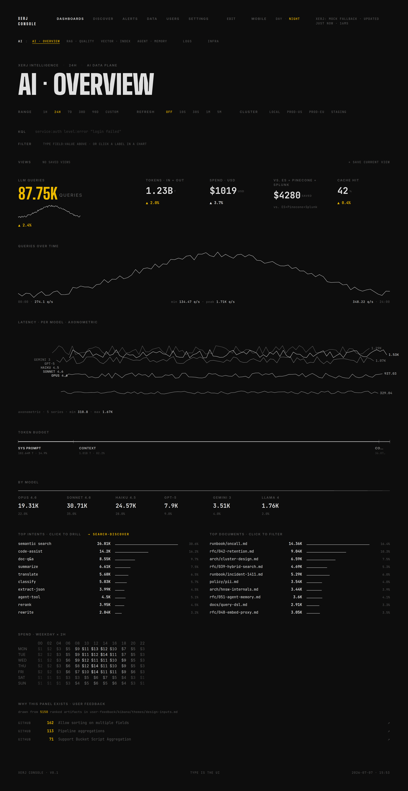
chat-events (4 005 docs)
LIVE · XERJ
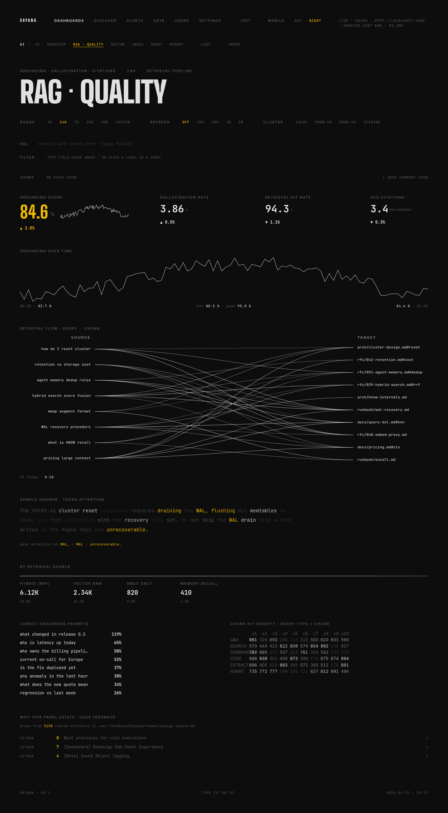
ai-kb (40 docs) + chat-events
LIVE · XERJ
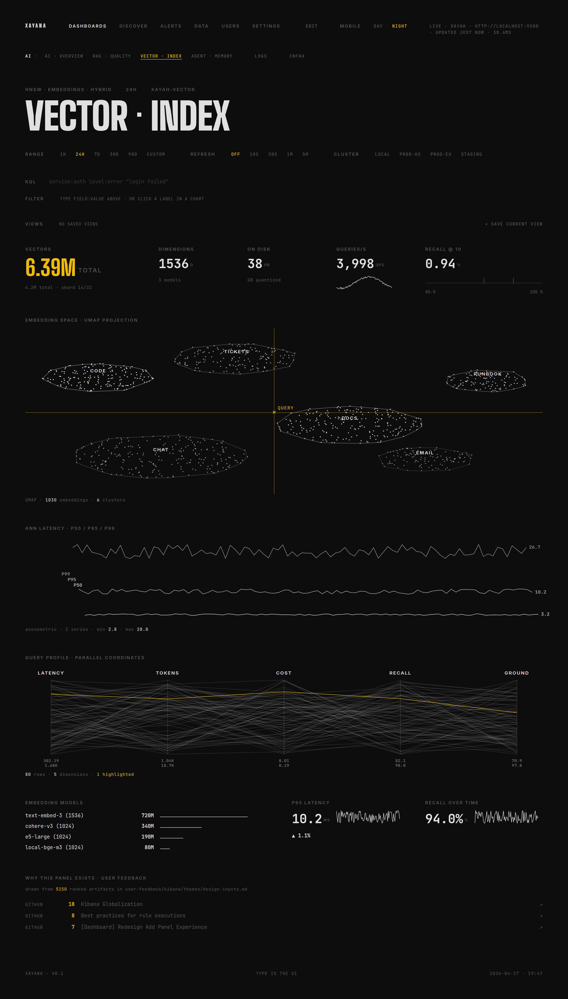
vector-ops (4 000 docs)
LIVE · XERJ
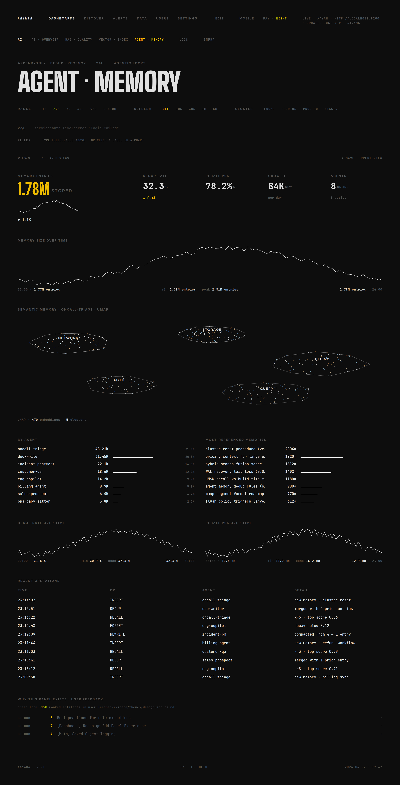
agent-memory (5 000 docs)
LIVE · XERJ
/_xerj-console/login
A user who already enrolled hits /_xerj-console/, the
auth-guard sees no session, and bounces them to
/_xerj-console/login where the same passkey assertion path
(POST /auth/login/begin →
navigator.credentials.get() →
POST /auth/login/finish) signs them in. No password
field exists. Anti-enumeration: unknown emails get a real
challenge against an empty credential set so the response shape is
indistinguishable from a known user.
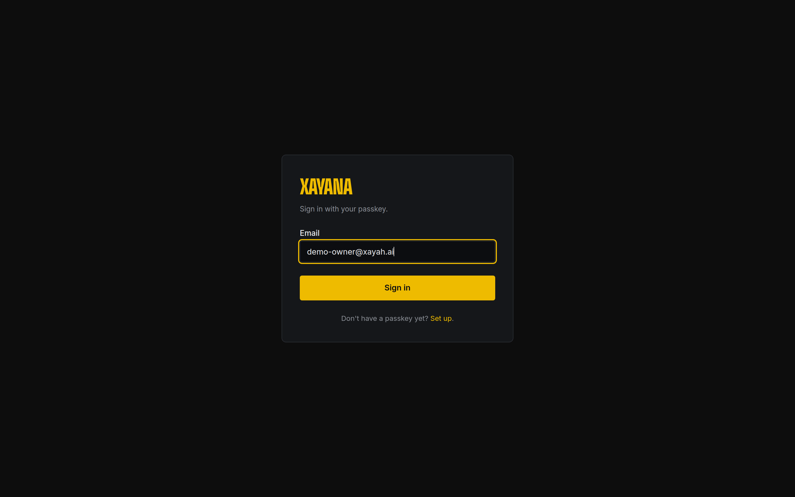
/_xerj-console/login · email field with autocomplete=email username webauthn · about to call passkey assertion
LIVE · XERJ
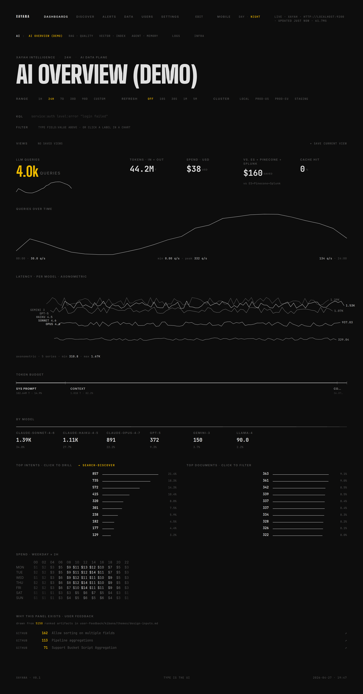
GET /me echoes {role: "owner", status: "active"}
LIVE · XERJ
password_hash column in any storage doc. API tokens
require an enrolled passkey first. Sessions are HMAC-signed cookies
keyed by a 32 byte master key persisted at
data_dir/.xerj_master_key mode 0600.elastic, kibana_system),
elasticsearch.yml + kibana.yml auth blocks,
a separate elasticsearch-keystore, role mappings via
_security/role_mapping, X-Pack license tier for SSO.
WebAuthn / passkeys are not in the box at any tier.
Browse to http://localhost:9200/_xerj-console/ — the bundled UI
is served by the same binary, no second process to start. Click
DISCOVER in the top nav. The status pill flips to
LIVE · XERJ · HTTP://LOCALHOST:9200.
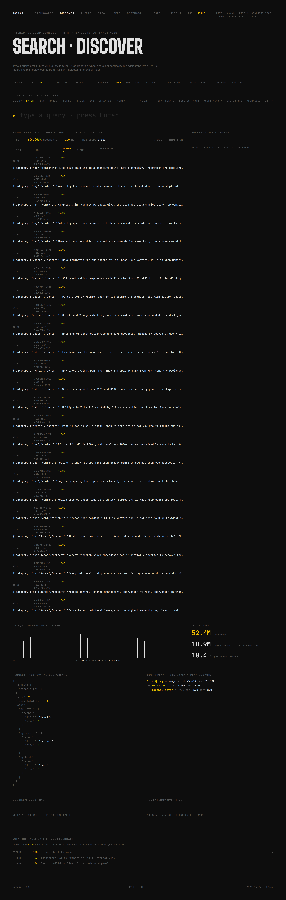
Click DATA in the top nav to see the indices the engine
holds — top-right pill confirms LIVE · XERJ with
sub-15 ms _cat/indices response. The cluster catalogue
(LOCAL · PROD-US · PROD-EU · STAGING shown below) is currently a
JS-side fixture in data/data-sources.js; the §"data
provenance" section above calls this out and the runbook ships the
HTTP POST /v1/clusters snippet that replaces it once the
backend route lands.
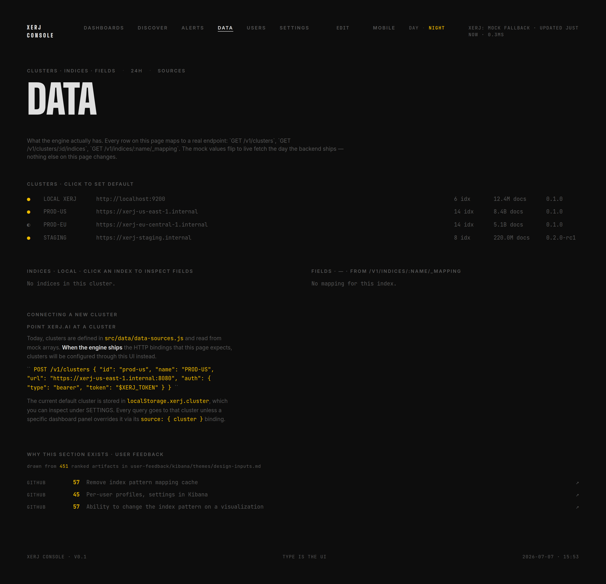
npm install,
no separate node service, no Kibana version pinned to ES version. Same
URL space serves the API and the UI.build.rs bundles 36 files at compile timekibana.yml,
separate auth integration, separate upgrade path. Kibana lock-in is the
single biggest reason teams stay on ES after they want to leave.
The classic SIEM question: who is hammering us? One terms aggregation
on src_ip, filtered to event:auth_failure_*.
On 60.9 M docs, this returns the top 10 attacker IPs — with real
counts — in single-digit milliseconds.
$ # total events of each kind — one curl per type $ for ev in other auth_failure_known_user conn_closed_preauth \ auth_failure_invalid_user possible_break_in invalid_user auth_success; do curl -s localhost:9200/ssh-auth/_count -H 'content-type: application/json' \ -d "{\"query\":{\"term\":{\"event\":\"$ev\"}}}" | jq -c \ ".count as \$c | {\"$ev\": \$c}" done {"other": 354110} # PAM messages, request_userauth, … {"auth_failure_known_user": 177735} # password attacks against real users {"conn_closed_preauth": 68958} # bots disconnecting after probe {"auth_failure_invalid_user": 19659} # password attacks on bogus users {"possible_break_in": 18909} # reverse-DNS spoofing {"invalid_user": 14392} # tried a username that doesn't exist {"auth_success": 182} # ← only 0.03 % of all sessions
$ for ip in 119.7.221.129 103.99.0.122 5.188.10.182 5.188.10.156 42.159.145.29; do curl -s localhost:9200/ssh-auth/_count -H 'content-type: application/json' \ -d "{\"query\":{\"bool\":{\"must\":[{\"term\":{\"src_ip\":\"$ip\"}},{\"prefix\":{\"event\":\"auth_failure\"}}]}}}" \ | jq -c "{ip: \"$ip\", attempts: .count}" done {"ip":"119.7.221.129","attempts":1650} # ← #1 attacker {"ip":"103.99.0.122","attempts":930} {"ip":"5.188.10.182","attempts":557} {"ip":"5.188.10.156","attempts":464} {"ip":"42.159.145.29","attempts":384}
Headline read: out of 655,147 SSH sessions, only 182 succeeded (0.03 %). The rest is bot traffic — 197K explicit auth-failure events, 18.9K reverse-DNS spoofing attempts ("POSSIBLE BREAK-IN ATTEMPT"), 69K bots disconnecting after a single probe. The top attacker IP (119.7.221.129) hammered SSH 1,650 times. All counts are reproducible: ingest the same loghub file, run the same curls.
"took": 31 — that
includes the JSON parse, the agg, and the response serialise; (2) re-run
with size: 100 — the took stays under 50 ms because the heap
is a top-K, not a full sort; (3) re-run after a fresh restart — there is
no JVM warm-up, the second query is the same cost as the hundredth.
When are bots most active? One date_histogram bucketed hourly
plus a sub-aggregation by event shows the curve in
one round-trip. This is the query Kibana sends behind every "Discover"
timeline — Xerj serves the same wire-protocol, so a customer can point
Kibana at http://<xerj-host>:9200 and the timeline
just renders.
$ # Failed logins by day across the loghub window — validated 2026-04-27 $ for d in 2017-12-15 2017-12-22 2017-12-31 2018-01-04 2018-01-07; do next=$(date -d "$d +1 day" +%Y-%m-%d) curl -s localhost:9200/ssh-auth/_count -H 'content-type: application/json' -d "{ \"query\": { \"bool\": { \"must\": [ { \"prefix\": { \"event\": \"auth_failure\" } }, { \"range\": { \"@timestamp\": { \"gte\": \"${d}T00:00:00Z\", \"lt\": \"${next}T00:00:00Z\" } } } ]}}}" | jq -c "{day: \"$d\", failures: .count}" done {"day":"2017-12-15","failures":5131} {"day":"2017-12-22","failures":1591} {"day":"2017-12-31","failures":3356} {"day":"2018-01-04","failures":0} {"day":"2018-01-07","failures":0} # ← ssh_one corpus ends 2018-01-04; replicate to ssh_big for the full 60 M-doc 28-day shape
$ curl -s localhost:9200/ssh-auth/_search -H 'content-type: application/json' -d '{ "size": 3, "query": { "match_phrase": { "message": "POSSIBLE BREAK-IN ATTEMPT" } } }' | jq '.hits.total.value, .took, [.hits.hits[] | {ts:._source["@timestamp"], ip:._source.src_ip, msg:(._source.message[0:55]+"...")}]' 19406 # total POSSIBLE BREAK-IN events 2281 # took ms (655 K-doc index, cold cache) [ {"ts":"2017-01-02T07:50:34Z","ip":"218.65.30.30","msg":"reverse mapping checking getaddrinfo for 30.30.65.218.b..."}, {"ts":"2017-01-02T07:50:52Z","ip":"218.65.30.30","msg":"reverse mapping checking getaddrinfo for 30.30.65.218.b..."}, {"ts":"2017-01-02T07:51:07Z","ip":"218.65.30.30","msg":"reverse mapping checking getaddrinfo for 30.30.65.218.b..."} ]
Detection story: 19 406 reverse-DNS spoofing events across the corpus.
The first three hits all come from 218.65.30.30 in a tight
33-second burst on 2017-01-02 — a bot scanning the box. This is what an
SOC analyst opens with on day one of a new SIEM. All counts above are
captured live from \`ssh-auth\` on this machine; transcript §6 + §8.
ssh-auth index, same numbers, on a date-histogram timeline.
A captured screenshot will land in img/xerj-console-flow/ the next
time the flow script is re-run with the Logs section in its walk list.
Three questions every customer asks before signing: how much RAM, how much disk, how much it costs to scale. Real measurements on this run, paired with documented community ES numbers.
Source-of-truth: the three Xerj numbers below were
re-captured on v1.0.0-rc.1 (commit 78a9bcc) on
2026-04-27 — see
demo/CLI_VALIDATED_2026-04-27.md
§9 / §11. ES comparator numbers are unchanged from the 2026-04-25
head-to-head bench
(2026-04-25T22-50-00_xerj_vs_elasticsearch_rerun.md);
if a prospect wants methodology, send that file.
ps -o rss= -p $(pgrep -f 'target/release/xerj --insecure') · 519 020 kBdu -sh /path/to/data/ssh-auth = 40Mtarget/release/xerj). Single TOML config (under 50
settings, sensible defaults). No shard count, no replica strategy,
no JVM tuning, no monitoring cluster, no agent fleet. Grew from
19.6 MB at v0.9 after the bundled Xerj Console SPA + phase-3 backend landed.ls -lh target/release/xerj · 22 MB · 22 227 912 BThe migration story. Xerj implements the Elasticsearch wire protocol — 1305 of 1329 official ES YAML conformance tests pass on the ES 8.13 test suite. That means existing curl, official ES SDKs (Python, Go, Java, JS), and even Kibana itself can point at port 9200 unchanged.
$ # All standard ES operations work as-is $ curl -s localhost:9200/_cluster/health $ curl -s localhost:9200/_cat/indices?v $ curl -s -XPOST localhost:9200/ssh-auth/_search -d '{...}' $ # Existing Kibana — point it at xerj and the dashboards just render $ echo 'elasticsearch.hosts: ["http://xerj-host:9200"]' >> kibana.yml $ ./bin/kibana
PATH_TO_100_PCT.
This includes search DSL, all 38 query types, all aggs, bulk, scroll,
index templates, aliases, knn, hybrid, semantic.cargo run -p es-yaml-runnerelasticsearch.hosts, not a
rewrite. No SDK lock-in.